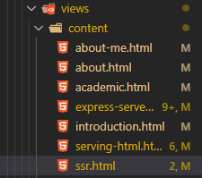
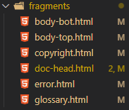
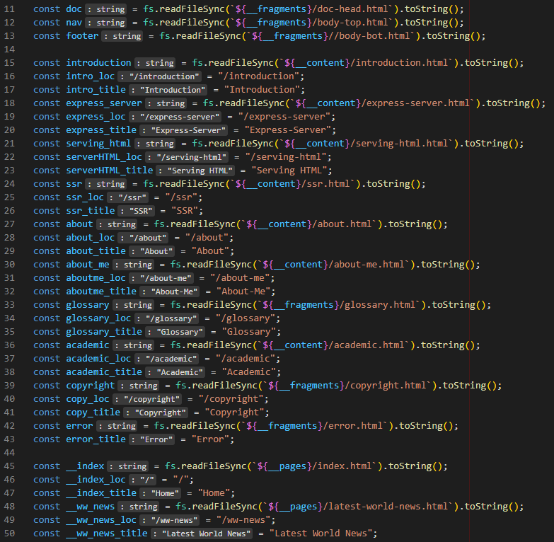

Server Side Rendering focuses on letting the client just display the content and making the server do all the processing to get that content ready. This relates to the complex way of serving HTML files as a string of text presented in the previous section.
SSR would also allow the server to dynamically change values displayed on the client side. This can be done by inserting special templates in the HTML files so that the server can replace them specifically with some other data. Another thing provided by SSR is the possibility of storing the parts that repeat multiple times on different webpages only once, as fragments, and combining only the fragments you need to be displayed for the response.
Examples of fragmenting files and building pages with different fragments:



In the code above, all the different fragments and sections that are available to be displayed in a web page are saved as string.
In the code above, there are 3 different ways of building a web page defined. In all of them, special templates found in the string of text are replaced with dynamic values.